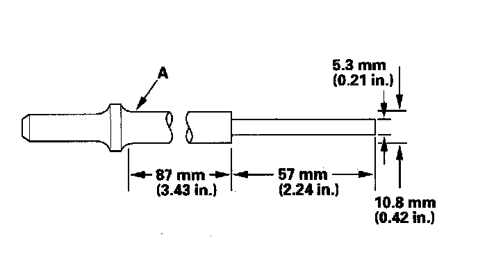
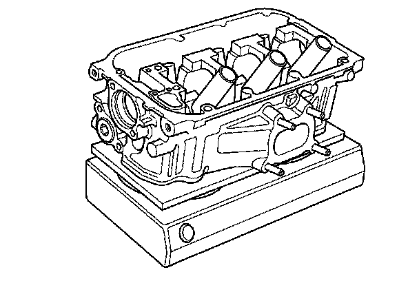
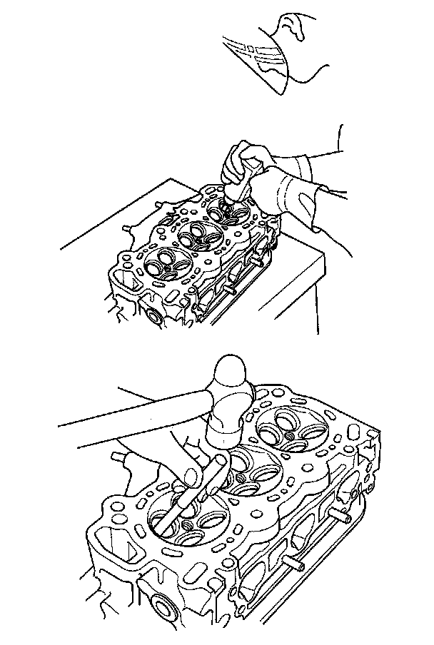
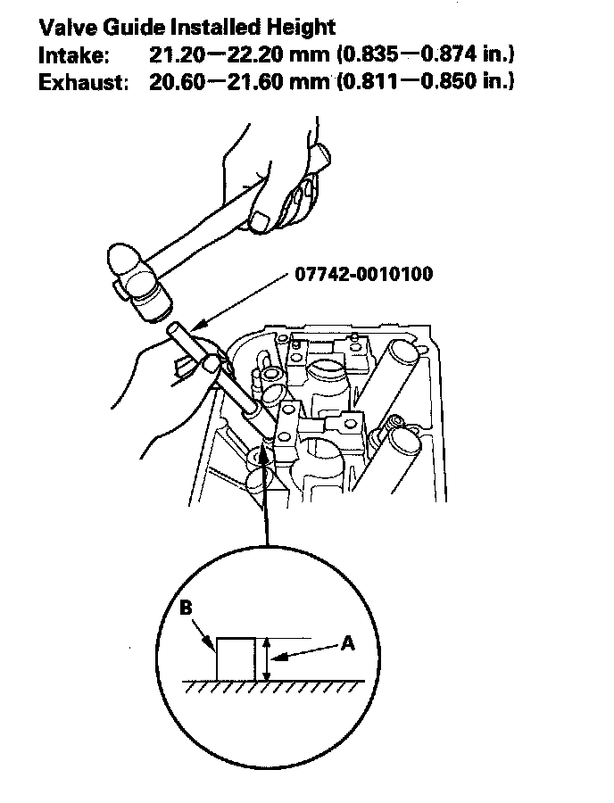
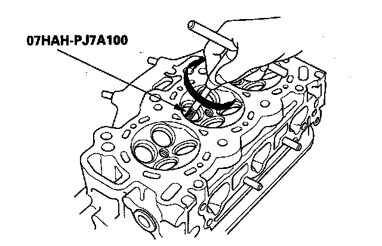

Valve Guide: Service and Repair
Valve Guide ReplacementSpecial Tools Required
^ Valve guide driver, 5.5 mm 07742-0010100
^ Valve guide reamer, 5.5 mm 07HAH-PJ7A100
1. Inspect valve stem-to-guide clearance.
2. As illustrated, use a commercially available air impact valve guide driver (A) modified to fit the diameter of the valve guides. In most cases, the same procedure can be done using the special tool and a conventional hammer.

3. Select the proper replacement guides, and chill them in the freezer section of a refrigerator for about an hour.
4. Use a hot plate or oven to evenly heat the cylinder head to 300° F (150° C). Monitor the temperature with a cooking thermometer. Do not get the head hotter than 300° F (150° C) excessive heat may loosen the valve seats.

5. Working from the camshaft side, use the driver and an air hammer to drive the guide about 2 mm (0.1 in.) towards the combustion chamber. This will knock off some of the carbon and make removal easier. Hold the air hammer directly in line with the valve guide to prevent damaging the driver. Wear safety goggles or a face shield.
6. Turn the head over, and drive the guide out toward the camshaft side of the head.

7. If a valve guide still won't move, drill it out with a 8 mm (5/16 in.) bit, then try again.
NOTE: Drill guides only in extreme cases; you could damage the cylinder head if the guide breaks.
8. Take out the new guide(s) from the freezer, one at a time, as you need them.
9. Apply a thin coat of new engine oil to the outside of the new valve guide. Install the guide from the camshaft side of the head; use the valve guide driver to drive the guide to the specified installed height (A) of the guide (B). If you have all 12 guides to do, you may have to reheat the head.

10. Coat both the reamer and the valve guide with cutting oil.
11. Rotate the reamer clockwise the full length of the valve guide bore.

12. Continue to rotate the reamer clockwise while drawing it from the bore.
13. Thoroughly wash the guide in detergent and water to remove any cutting residue.
14. Check the clearance with a valve. Verify that a valve slides in the intake and exhaust valve guides without being stuck.